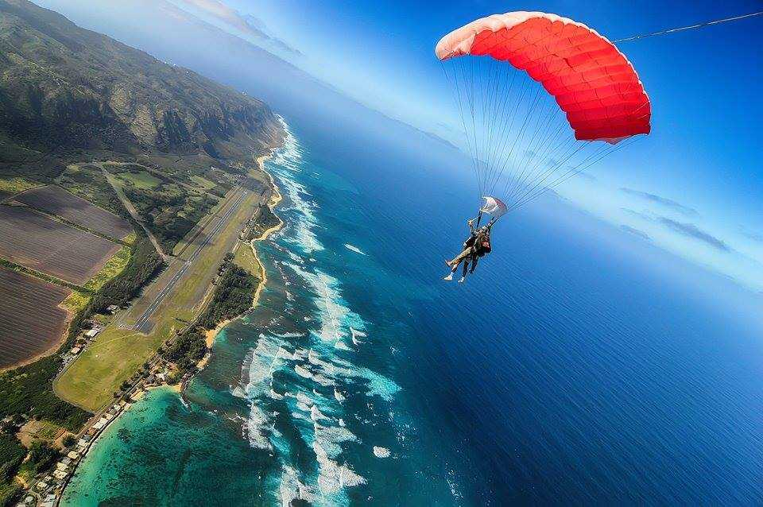
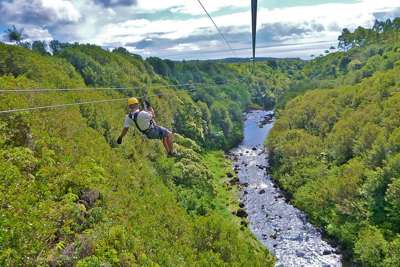
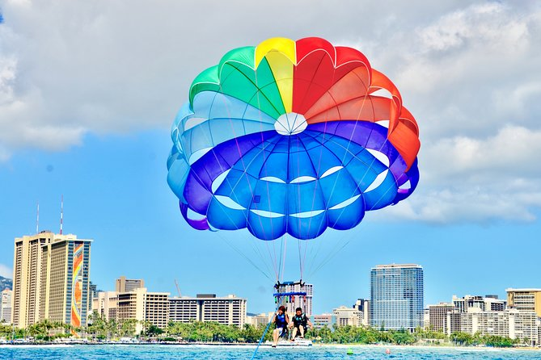

Hawaii is a must visit place, there is so much to do and so much to see. even on such a small island it is packed with trilling, heartracing activities that stand out because of the natural beauty of the island.
The weather is perfect all year round making it a popular spot amongst tourist in all seasons. Another plus is a lot of places to visit such as shops and stands really help out the community and economy of the state.
To begin the fun and exciting activities in Honolulu and the Island of Oahu we must start with possibly the most exhilarating being... Skydiving

Skydiving in Hawaii is one of the most beautiful experiences ever. The prices range anywhere from $250-$1600 depending on the height of the jump,it will cost a pretty penny but it is guarenteed to make every cent worth it.
The next fun thing to experience in Honolulu is Ziplining. From my personal experience this is one of the more exciting and underrated activities to do. There are many locations to zipline but I recommmend one tht is deeper and higher up the mountain. The reason for this is you get to experience more adrenaline, zipping from tree to tree, next to waterfalls and above small water holes.
 
Lastly, my favorite activity is Parasailing. For those who don't know what that is, it is getting towed by a boat whil strapped into a parachute. The wind resistance lifts you right off the ground and you can fly through the air up to 1000 feet. When you're up there the view is amazing but the blue water looks the same from 10 feet up as it does 100 feet up.
Its is truly a experience that everyone should try, especially if you ask the captain to dip you in the water. Its is fairly inexpensive with the median being about $70 for a trip up into the sky.

To learn about even more things to do in Hawaii click here